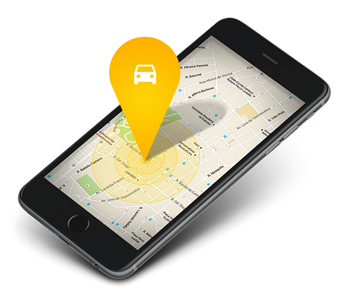

<ion-header>
  <ion-toolbar>
    <ion-title>Buscador de Vehículo</ion-title>
    <ion-buttons slot="start">
      <ion-back-button></ion-back-button>
    </ion-buttons>
  </ion-toolbar>
</ion-header>

<ion-content>


  <section class="buscador">
    <h1>Introduzca aquí la matrícula de su coche y le diremos en que fila y número de aparcamiento está
      estacionado.</h1>

    <form [formGroup]="ejemploForm" *ngFor="let item of nombreControles">
      <ion-item>
        <input class="formulario" placeholder={{frase}} [(ngModel)]="matricula" [formControlName]=item>
      </ion-item>
      <ion-item *ngIf="validateControl(item)">
        <ion-label>{{getErrorMessage(item)}}</ion-label>
      </ion-item>
      <button (click)="rastrear()" value="Enviar" *ngIf="!mostrar && matricula">
        
        Rastrear
      </button>
    </form>

    <div class="vehiculoEncontrado" *ngIf="localizacionVehiculo">
      <h1>{{localizacionVehiculo}}</h1>
      
    </div>
    <div class="vehiculoNoEncontrado" *ngIf="noEncontrado">
      <h1>{{noEncontrado}}</h1>
      
    </div>
    <br>
  </section>
  


</ion-content>